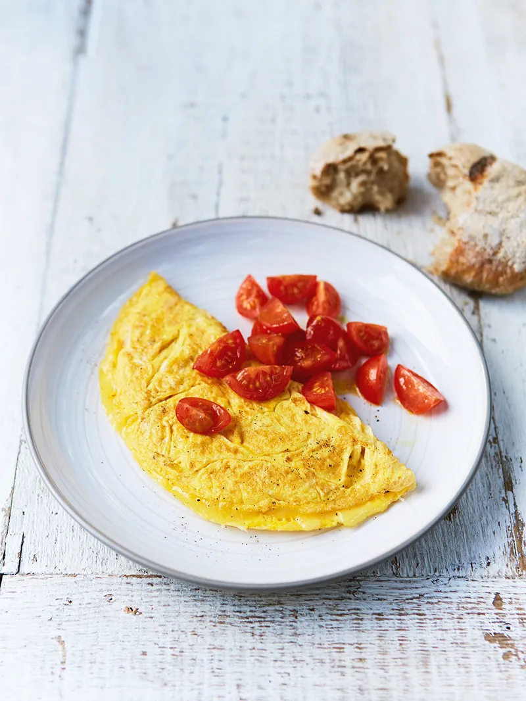

Omellete ala Fros
This is a simple omellete with a few extra ingredinets to make for a full meal. It's quick and easy to make, perfect for the time we live in, where half of us are too busy and the other half are too lazy to make something that requires more than 20 minutes of your time. And a lot of us are both! If this is you, but you still want to eat better than a hobbo or a college student, this is the right recipe for you.

Ingredients
- 2-3 eggs depending on size
- sunflower seeds, peeled
- 100gr of grated cheese
- 3-4 medium sized shiitake mushrooms
- parsley or spring onion leaves
- a few chery tomatoes
Cooking Instructions
- chop up the mushrooms and put them in a frying pan with a tablespoon of oil. Fry for 5-7 minutes.
- mix the eggs in a separate bowl, beat them until they form a homogenous mixture
- add the sunflower seeds and grated cheese in the egg mix and stirr until it's well mixed
- pour the egg mixture in the frying pan with the mushrooms, make sure the mixture is evenly distributed in the frying pan
- if necesary, flip the omellete to mahe sure you have it well cooked on both sides
- serve the omellete folded in half with some parsley or spring onion leaves on top and a side dish of cherry tomatoes
Bon Apettite